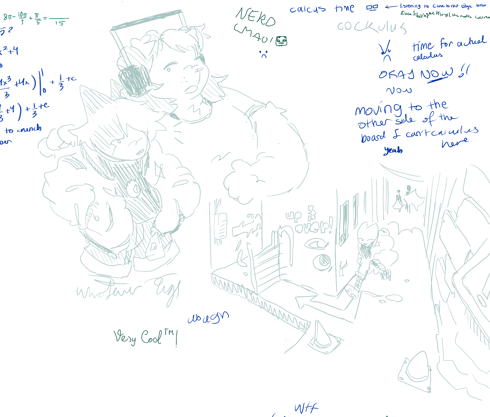
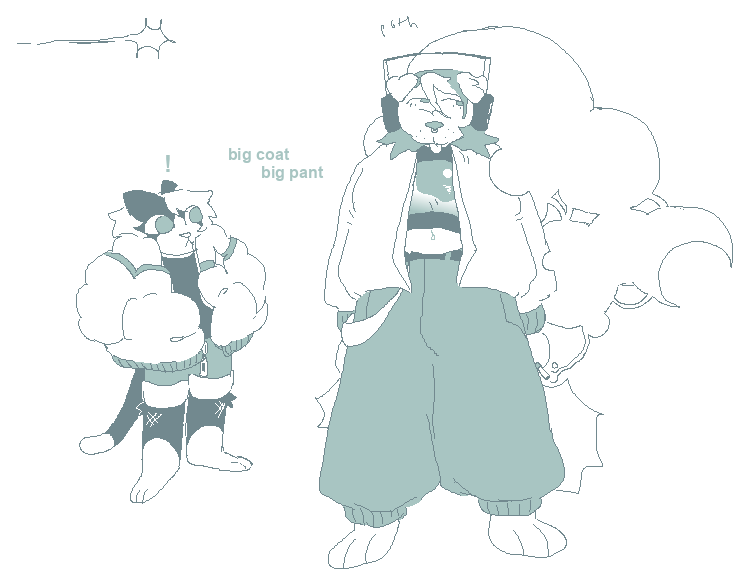
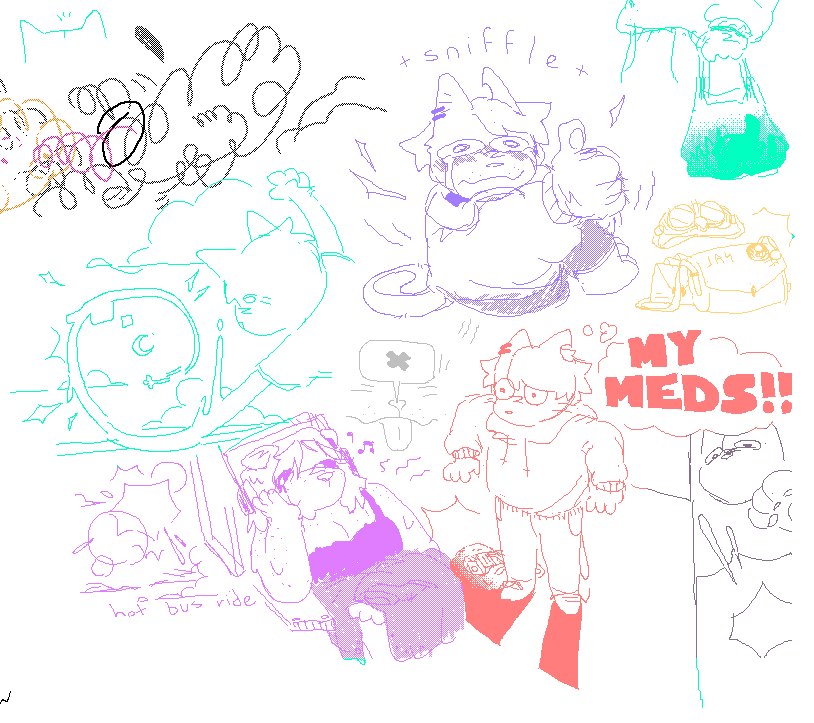
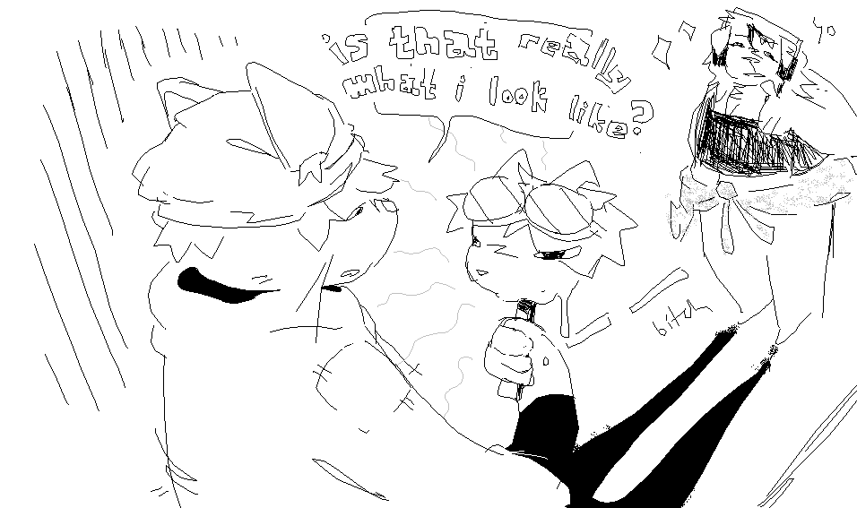
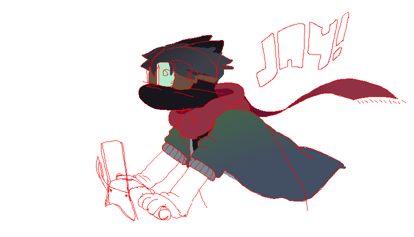
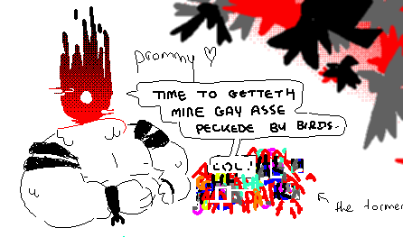

brush testing

doodle from an aggie


bunny girl appears


was trying to fuck with clothing proportions but i ended up just drawing cc normally so
also its funny how much my linework improved between this doodle and the previous one



beans.


original caption: "tip: mirror motifs can manifest in many ways. be wary of self-recognition in the other !"
also cc doing what is presumably her best jesse pinkman impression

i think was supposed to be part of a cover page

fucking around with halftone textures
